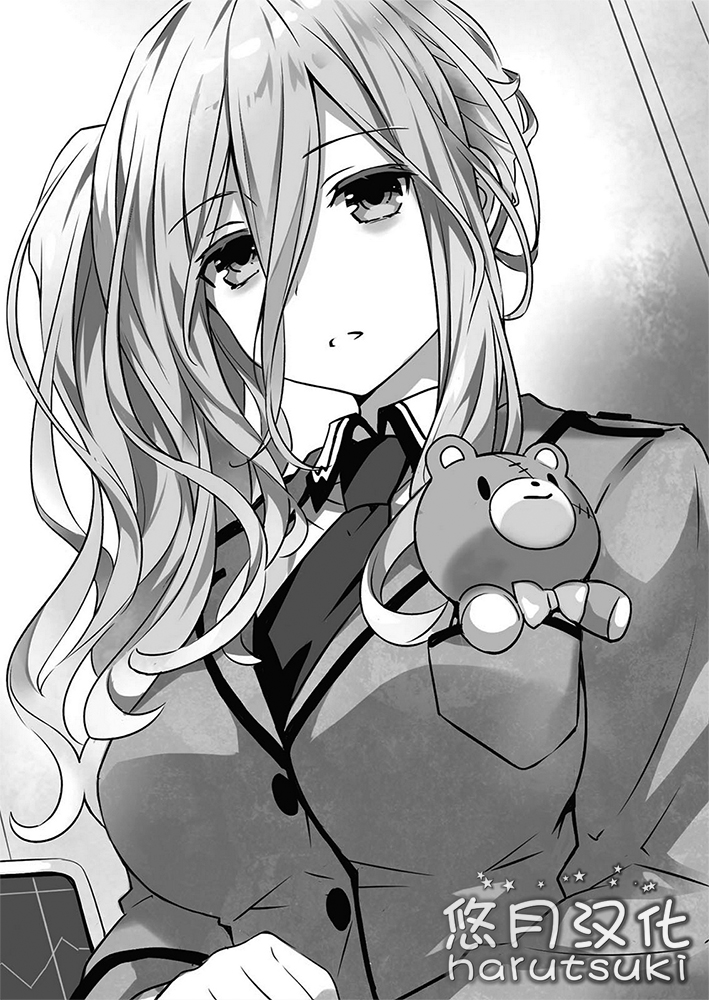

「————，……——」
虽然想要发出声音，但是从嘴唇中挤出来的只有嘶哑的喘气声而已。
极度的紧张与兴奋毫不留情地使身体与精神在短时间内陷入了疲劳之中。时崎狂三的腿微微地颤抖着，当场坐到了地上。
「『我』！」
「没关系吗？」
接着，周围的少女们发出了担心的声音。
左右不均地束起来的头发，像是时钟一样的左眼。全员都是和狂三有着相同样貌的，狂三的分身们。
狂三在干哑地咳嗽了几声之后慢慢地站了起来。
「嗯……没什么大事。」
现在，狂三们所在的地点是深夜的大楼屋顶。月亮隐于云间，唯有地上的灯火朦胧地照亮着周围。
「…………」
狂三低头紧紧盯向了与黑暗混在一起的自己的影子，然后慢慢地抬起了腿——咔！用鞋跟狠狠地踩了一脚。
这并不是想要召唤天使或者潜伏在影子之中的分身。
只是——对刚才被吞进影子之中的精灵放心不下而已。
没错，狂三一直到刚才为止，都在和存在于这里的某个精灵对峙着。
识别名〈Phantom〉。
被马赛克隐藏了存在的迷之存在，将人类变为精灵的精灵。
然后，将马赛克所剥除之后的姿态正是——士道他们的副班主任，同时也是〈Ratatoskr〉的解析官·村雨令音。
不过说来，就算踢影子也不可能知道里面的状态。
虽然入口只有一个，但大体划分的话狂三的影子之中存在两个领域。
一个，是分身们于其中蠢动着的，如同出入自由的隐秘家宅般的空间。
然后另一个，是为了将被吞噬之人的「时间」连根夺取而存在的像是胃袋一样的空间。
当然，狂三吞噬令音所用的是后者。
那个空间对狂三而言也并不能随心所欲。不但吞进去的东西无法随意地吐出来，想要窥探其中的情况也是完全办不到的。就像是人类无法用肉眼窥视自己体内一样。
……之所以踢影子，只是单纯地因为熊熊燃起的情绪没有发泄之所罢了。
无论是多么强大的精灵，被那个空间所吞噬的话应该是不可能活下来的。狂三在恢复了平静的寂静之中微微地叹了口气。
「真是——太简单了呢。将自己的力量过度分割的精灵……也就是这种程度呢。」
像是在告诉自己一样，狂三这么轻语道。
实际上，那并不是她本来的力量吧。由于被狂三打了个出其不意，她连天使和灵装都没能够显现。
但是，重要的是结果。令音消失了，狂三还站在这里。只有这个事实，是这场争斗的结果。
狂三再一次轻轻地吐了口气后眼神变得锐利起来，然后慢慢地抬起了头。
「来吧——『我们』。这并不是结束。我的目标并不是像刚才那样的废物，而是三十年前的，处于全盛期的怪物。」
「…………」
狂三用响亮的声音说道，分身们表情顺从地点了点头。
「而为了这个目的，士道先生的灵力是不可欠缺的。——走吧。」
「诶，诶，走吧。」
「打破DEM的谋算，将士道先生抓到『我』的手中。」
「力量被分开的〈Phantom〉是这副模样的话，在其出生之前将其击溃是很容易的。」
「诶，诶。但是——」
这时，一个分身突然露出了疑惑的表情。
「为什么〈Phantom〉宁可自己的力量被分割，也要增加精灵的数量呢。明明那必然会招致自身的弱化的说。」
「…………」
听到分身的话，狂三一时之间变得无言了起来。
确实就像她所说的，如果令音是处于力量完全的状态的话，就算是狂三也不会有胜算吧。
这是关乎自身性命的事情。狂三也不认为她只是为了玩乐才将人类变为了精灵。
肯定有着什么——有着什么理由。
即使自己失去力量，也要做成的什么事情。
即使自己的性命暴露在危险之中，也要达成的什么目的。
「…………」
但是，无论怎么想也想不出答案。唯一能够回答这个问题的女人，已经长眠于黑暗的影子之中了。
「——哼。」
狂三嫌恶地哼了一声，和分身们一起离开了这个地方。
◇
「——司令！士道君的反应已经捕捉到了！」
漂浮在天宫市上空的空中舰〈Fraxinus〉。
船员的声音响彻舰桥。
像是对这个声音产生了反应一样，靠坐在舰长席上的少女的肩膀，以及她那绑成双马尾的头发摇动了起来。
「！干得好，到底在哪里！？」
作为〈Fraxinus〉的舰长并且也是〈Ratatoskr〉的司令官·五河琴里将嘴里含着的珍宝珠的棒棒直直地立了起来，身体前倾将视线投注到了主屏幕之上。
尽管如此，并没有人认为她反应过度。
毕竟，琴里的哥哥·五河士道的踪迹，在和「最恶的精灵」时崎狂三进行接触的时候消失了。
几秒之后，主屏幕上映出了一个少年的身影。
中等的身材，摇晃的脚步。虽然因为低着头而看不到表情，但那毫无疑问是琴里的哥哥——士道。
不知道是不是错觉，感觉衣服比起之前有些脏了。而且，应该和他在一起的狂三在哪里都找不到。到底发生了什么事情呢。
「总之，先对士道进行回收！」
「是！」
在琴里的命令下，船员们开始操作起控制台。
于是下一个瞬间，伴随着微小的驱动声〈Fraxinus〉开始了移动，显示器中的士道的身影突然消失了。
几秒之后，像是和其进行了替换一样，在舰桥内部的传送装置之上，士道的身影在淡淡的光芒之中出现了。
「士道！」
琴里的喉头颤动着，从舰长席上站了起来跑向了士道那边。
「没事吧！？到底发生了什么！？狂三——」
这时，抓着士道的衣袖问东问西的琴里突然停下了话语。
因为接近士道并端详了他的脸，所以琴里看到了士道的表情。
烦闷，悲哀，还有几许悔恨。
以及由这些所形成的——决意的表情。
确实士道是以封印狂三的灵力这样明确的意志去面对她的。但是，从现在的士道身上所感受到的，是连那份意志也超越了的，混进了些许疯狂的，悲怆的使命感。
这就像是——即使舍弃自己的生命，也必须要拯救什么的执念一样。
看着在他双眸深处燃烧着的光芒，琴里一瞬间有种被压倒的感觉。
「——琴里。」
士道静静地抬起了头，张开了口。
「可不可以把大家集合起来。我要告诉你们，全部。现在，不——到现在为止，到底发生了什么。狂三做了些什么。以及她为我，做了什么。」
想要问的事情像山一样多。而且，在无法确认狂三的所在的情况下，也想要尽快地获得情报。实际上，如果是平常的琴里的话，肯定会说出「你装腔作势的想要做什么呀」这种话，强行地催促他说出来吧。
但是，她没能这么做。一种不容置疑的气势，以及似乎触之即碎的凄惨，充斥在现在的士道身上。
「……嗯，我知道了。」
琴里微微地倒吸了一口气，向前微微低下了头。
然后她像是要重新打起精神一样做了一个深呼吸后，对船员们下达了指示。
「椎崎，对公寓里的精灵们进行回收！箕轮，你负责和折纸，美九和二亚取得联络！川越，幹本继续搜寻狂三的反应！」
「了解！」
听到琴里毫不拖泥带水的指示，船员们同时回答道。琴里微微地点了点头，接着将视线移到了左边。
「还有令音，你联络一下真那——」
——这时。
话说到这里的琴里皱起了眉头。
位于视线前面的，是坐在控制台前面的一个女性的身影。朴素地束起来的长发。透着一股睡意的双眸下浮现着厚厚的黑眼圈。从栗鼠色的军服的胸前口袋之中，一只浑身满是缝补痕迹的小熊玩偶微微探出了脑袋。
〈Ratatoskr〉的解析官，琴里的挚友·村雨令音。
「……嗯，了解了。我去叫一下真那吧。」
令音慢慢地点了点头，回应了琴里。
应该并没有什么奇怪的地方。无论是她的容貌，声音还是回应，全部都和平常一样。
但是，到底是为什么呢。琴里看着眼前的光景，产生了奇妙的违和感。
「……琴里？」
「——」
被令音叫到名字，琴里的肩膀忽地晃了一下。
「啊……抱歉，拜托你了。」
看来是似乎有些神经质了。琴里微微地摇了摇头，这么回答后将视线移了回去。
◇
——自从士道被〈Fraxinus〉回收之后，大概过了一个小时。
「…………」
舰内的作战会议室被沉默所支配着。
包含士道在内，房间内一共可以看到十三个人的身影。十香、折纸、琴里、四糸乃、耶俱矢、夕弦、美九、七罪、二亚、六喰这些精灵们，以及令音和真那。如果还要补充的话，〈Fraxinus〉的管理AI的鞠亚也应该在通过画面注视着这里的状况。
明明聚集起了这么多的人，但从刚才开始却没有任何人发言，大家都一副为难的表情保持着沉默。这之中尤其是真那，一副理解却无法接受的样子，抱着胳膊深深地皱起了眉头。
虽说如此，这也是无可奈何的。
大家，都听到了。都知道了。士道，告诉了大家。
从〈Nightmare〉——时崎狂三的这位精灵是如何诞生，到她为何会背负最恶的精灵的恶名。
然后这样的她，为了从死亡的命运之中拯救士道，无数次地重置了世界。
士道说了出来。毫无隐瞒，毫无夸张，毫无虚假。
她的足迹，她的历程，还有她的——过于悲痛的愿望。
单凭士道一个人来承受这些要说感觉不到不安那是骗人的。到底怎么做才能够报答狂三的所作所为，他是真的想和大家商量一下。
但是，最重要的是——士道希望大家知道。
知道时崎狂三这位少女，并不是一个单纯为了私利私欲或者快乐而积攒罪业的十恶不赦之徒。
知道由于在不知情的情况下犯下了过错，为了拯救人类、朋友、世界，而选择在充满荆棘的道路上前行的，她那崇高的决意。
……嘛，说不定，狂三本人或许讨厌这些事情被人知道就是了。
「姆……没想到狂三的身上，竟然发生过这种事情。」
「吓一跳……呢。」
像是要打破沉默一样，发出声音的，是十香和四糸乃。两人睁大着双眼，脸上垂下了汗珠。
「……让人难以一下就相信呢。」
这时，将头发绑成一束的带有泪痣的少女接着说道。
崇宫真那。〈Ratatoskr〉所属的魔术师，自称·士道的实妹。她那凛然的双眸现在正因为怀疑和困惑而呈现着疑惑的形状。
「那个十恶不赦残忍无情人面兽心，而且性格最恶烧肉定食的〈Nightmare〉，想要拯救大家？不要开这种讨厌的玩笑了。」（狐狸的须02：这里的烧肉定食是采用原文，真正想表达的意思是弱肉强食，实际上这是一种日本的谚语恶搞。）
这么说着，真那动作夸张地耸了耸肩。
但是这也是当然的。无论怎么说真那和狂三两个人迄今为止进行过无数次的交锋，完全可以说是宿敌了。就算突然听到这种话，也不可能简单地接受吧。
「真那，你的心情我明白。但是——。」
但是，士道说到这里的时候，真那低下了目光，像是要制止士道的话一样伸出了手掌。
「……话是这么说，嘛，如果被问到这和兄长大人对真那说谎的概率相比哪一边更高的话，我也不得不相信了呢。」
说着，真那呀嘞呀嘞地叹了口气。
「真那……」
「对了，不要误会呀。这只是我相信了兄长大人的话而已，并不表示我认同了那个女人呢。」
「……真是矫情呢……这不是一个意思吗？不，虽然我大概也知道你想表达的意思……」
脸上流着汗的七罪说道。但是真那一副毫不在意的样子继续说道。
「比起这个，兄长大人，把这件事放到一边，我还有另一件很在意的事情。」
「嗯……什么事？」
士道露出了疑惑的表情，真那竖起了一根手指，眼神认真地注视着士道问道。
「兄长大人所体验到的〈Nightmare〉，时崎狂三的过去——在那之中登场的，叫做『崇宫澪』的女人的事情。」
「…………」
听到真那的话，士道的喉咙里发出了微小的呻吟声。
没错。士道通过狂三的天使〈刻刻帝〉的子弹知晓了狂三的过去。
而在这之中，出现了自称为崇宫澪的少女。
而且这个少女明显是超脱寻常的存在。是赋予狂三灵结晶（Zefra）使其变为精灵，并通过她的力量狩猎精灵的，狂三的仇敌。可以说是一切的开端的存在。
再加上，真那会对这个少女感到在意也完全是在预想之中的事情。
毕竟——「崇宫」。
澪，报上了和真那相同的姓氏。
而且「mio」这个名字，是过去士道灵力暴走处于忘我深渊中时曾经说出过的名字。（多拉泽：mio是澪的读音）
这过于奇妙的巧合，叫人实在很难不去在意。
「啊……我也很在意这件事。这个叫澪的家伙到底是什么人呢。」
「赋予狂三灵结晶使其变为精灵……就像是在我们面前出现过的〈Phantom〉一样呢。」
像是回答士道的问题一样这么说道的是琴里。她盘着双手双脚坐在椅子上，嘴里的珍宝珠的棒棒小幅地上下摆动着。
〈Phantom〉。这是给予了琴里、折纸、美九、二亚以及六喰她们灵结晶，使她们精灵化的迷之精灵的名字。确实就如琴里所说，她和在狂三的记忆之中登场的澪有着大量的共同点。
「是拥有和〈Phantom〉相同力量的精灵吗，还是说〈Phantom〉的正体就是崇宫澪吗。如果是这样的话那么她的目的到底是什么呢。而且说到底她和士道以及真那的关联性到底在哪里呢……谜团真是一个接着一个呢。」
说着，琴里放弃似地耸了耸肩。
接着真那微微地点了点头继续说道。
「当然，只是偶然姓氏相同，或者只是隐藏了自己的名字这样的可能性也不是完全没有，但是如果以有着什么关联为前提来考虑的话，是不是我和兄长大人的亲戚呢？至少，应该是我或者兄长大人见过面的人。」
真那拄着下巴说道。
虽然是不得要领的话，但是这也没有办法。毕竟士道和真那「愉快地」双双失去了过去的记忆。
虽然现在通过DNA鉴定证明了两人是亲兄妹的事实，但是最开始真那称呼士道为兄长大人的理由，仅仅只有她所带着的挂坠里的照片，以及她的直觉，这样相当粗枝大叶的东西。
「嗯……是怎样呢。只有这些的话也没办法……」
就在士道哼哼唧唧地嘀咕着的时候，二亚像是意识到了什么一样露出了疑惑的表情。
「啊嘞？但是根据你们所说的话，少年对那个澪亲直接叫了名字不是吗？那不是很奇怪吗？」
「诶？有什么奇怪的？」
「不，所以说啊，三三和澪亲相遇不是几十年之前的事情了吗？如果是亲戚的话，就算是奶奶或者是阿姨也不奇怪吧。但是直接叫名字，不觉得有违和感吗？当然如果失去记忆之前的少年的个性非常粗野的话就另当别论了——」
「啊……」
这么说的话确实很有道理，士道唔唔地挠了挠脸颊。
但，像是要对其反驳一样，折纸立马张开了口。
「这也未必。崇宫澪是精灵，或者是拥有着类似的力量的存在这一点是毫无疑问的事实。那样的话，她以和出现在时崎狂三面前时相同的姿态与士道和真那相遇的可能性也是有的。」
「啊——，喵来如此——。确实我在被封印之前，无论怎么熬夜怎么喝酒，肌肤都像是刚洗完的鸡蛋一样光滑喵。」（狐狸的须02：喵来如此是二亚卖萌，将なるほど（原来如此）的第一个音替换为にゃ变为にゃるほど）
像是开玩笑一样说着，二亚用双手抚摸着自己的脸。明明只要沉默就好了可是七罪却「……现在呢？」这么问了出来，结果收到了二亚「一旦大意的话，就能在皮肤的弯道处以锐利的弯角使出排水沟跑法了……你让我说些什么呢！」这样愉快的吐槽。真是个容易相处的精灵呢。（狐狸的须02：二亚用了头文字D的梗来吐槽自己现在的皮肤……，服了）
苦笑着看着眼前的这番景象，士道再一次小声地嘀咕起来。
虽然如此，无论怎么思考在脑中也得不出任何的答案。这是当然的。毕竟情报过于稀少。如果士道和真那能够想起一些以前的记忆的话情况就会变得不同了吧——
「呼姆。」
在士道想着这样那样的事情的时候，他突然听到了这样一个可爱的吐息声。
向着发出声音的方向看过去，精灵之一，星宫六喰，正像是在消遣一样玩弄着缠绕在肩膀上的长长的三股辫的前端，并将视线向士道送来。
「真是个奇异故事呢。——那么官人，若是当真这般在意，只需回想起来便可不是吗。」
然后，六喰一副随意的语气如此说道。
多么天真无邪的语言。真的就是这样。士道一瞬间睁大了眼睛露出了苦笑。
「啊哈哈……是呢。只要一下子都想起来就好了……可，是——」
但是。
说到这里士道终于意识到了六喰话语的意义。
六喰既不是在开玩笑，也不是没有理解到士道他们在说什么。
真的就像是字面上所说的，她只是直接表达了她的意思。
「……能够，办到吗？」
士道带着微妙的表情问道，六喰理所当然似地点了点头。
「六儿的〈封解主（Michael）〉乃绝对之键。可见之物，不可见之物。可触之物，不可触之物。万事万物皆无差别，〈封解主〉不可开启之物无存于世。——纵然是紧闭不开的记忆之门。」
「…………」
听到六喰的话，士道倒吸了一口气。
六喰所掌控的键之天使〈封解主〉。
如字面上所说是拥有「解开」万物，以及「封闭」万物的力量的强力无比的天使。
确实如果有〈封解主〉的力量的话，就有将被封印的士道的记忆唤醒的可能。士道像是要抑制自己忽然剧烈泛起的悸动一样将手放在了胸口。
不对，不只是士道。并排而坐的精灵们也是一副或是惊讶或是期待的表情注视着六喰。
「……士道。」
在这之中，反应最为明显的就是琴里了。她表情紧绷地看着士道的方向。
那表情之中蕴含的情感既不是惊讶也不是困惑——而是紧张。
就像是已经意识到了六喰所说的〈封解主〉的可能性，但是却并没能说出来的模样。
「——琴里。」
看着她的表情，士道察觉到了琴里的想法以及不安。
就算万事顺利，士道取回了过去的记忆，那也未必是士道他们所期望的东西。毕竟，在士道和真那的过去到底发生了什么，谁都不知道。
不仅如此，取回了本来的记忆后，也无法保证士道还能保持住现在的人格。现在的士道被过去的士道的人格所吞没……虽不说可能会到这种地步，但过去的记忆对士道造成某种影响的可能性是无法否定的。
——但是。
「没关系的。因为无论发生了什么我都永远是你的哥哥呢。」
士道这么说着抚摸着琴里的脑袋，露出了和蔼的微笑。
「哥——哥……」
琴里一瞬间像是受到了极大的感动一样湿润了眼角，但是想到大家还在看着，她马上摇着头呼地吐了口气。
「……我，我可不是担心你什么的。这是——理所当然的。」
琴里脸红着撅起了嘴。那副模样实在太可爱了，士道抚摸着她脑袋的力气不由得加强了。
「哈哈……啊，是这样呀。」
「咳咳。」
瞬间，响起了很是刻意的咳嗽声。真那露出了有些不满的表情。
「啊，不是，不是这样的。当然真那也是我可爱的妹妹哟……？」
士道急忙解释道，真那像是在说「我知道」一样耸了耸肩。
「开玩笑的哟。不希望现在的兄长大人发生改变的想法真那也是一样的。」
但是，真那继续说道。
「如果真的有能够取回过去记忆的手段的话，确实也想要尝试一下。崇宫澪到底是什么人，我和兄长大人到底发生了什么，想要知道的事情真是数不胜数呢。」
「……啊。」
士道带着决意点了一下头，低下了目光，慢慢地举起了右手。
然后轻轻地呼吸着开始集中精神。
感受身体之中流动的力量，并使之具有指向性一样的感觉。
在士道的意志之下，被封印的来自精灵们的灵力聚集在了右手上，使得士道的身体一下子热了起来。
虽然过去士道想要抓住这种感觉是很不容易的，但是自从灵力暴走之后，似乎只要有能够集中精神的环境和时间的话，就能够在某种程度上自由的操控这些力量了。
「——〈封解主〉。」
然后士道震动声带，呼唤了天使的名字。
接着，像是回应他的声音一样，身体之中流动着的热流从右手渗透了出来——一柄尖端像是钥匙一样的巨大的锡杖显现了出来。
「哦哦……！」
「〈封解主〉……」
士道感受到精灵们倒吸了一口气。
为了静下心来，士道做了深呼吸，然后双手拿着显现出来的〈封解主〉，想要将其刺进自己的脑袋。
……但是，〈封解主〉实在是太大了，士道无法顺利做到。看着他那滑稽的样子，精灵们露出了苦笑。
「唔咕……」
「这般形状想必难以使用，官人。既然官人已将〈封解主〉持于手中，便应当已知晓其力量。只需使用『小键』便可。」（多拉泽：小键的注音是テフェテー或者是テフエテー，这个我实在是查不到，个人怀疑是希伯来语，如果有大佬知道的话希望能够告诉我。）
于是六喰就像是授予弟子教诲的女仙一样伸出了一根手指说道。
「『小键』……」
士道重复着这个词语。升起一股不可思议的感觉。明明是从未听过的词语，但是自己却已然知晓。
虽然这样说但是有这种感觉也并不是第一次了。将精灵们的天使握在手中的时候，它的权能就会模糊地出现在头脑之中。
想起自己不知道的事情，奇妙的感觉。
士道在脑中将这个印象固定起来，再一次叫出了那个名字。
「〈封解主〉——『小键』。」
然后像是在回应他的呼唤一样，士道手中的巨大的锡杖以肉眼可见的速度开始了收缩，最后变为了可以被手掌所攥住的大小。
原来如此，这样的话用起来就简单多了。大概六喰在用钥匙刺自己的脑袋的时候，就是使用的这个形态吧。
「好……」
士道重新调整了呼吸，将手中的钥匙慢慢地抵在了自己的太阳穴上。
「——那么，开始了。」
「呜姆……！」
「无需多虑。相信〈封解主〉便好！」
「啊嗯！竟然要把那种尖尖的东西刺进达令的身体里面！」
「……美九，你先不要说话。」
精灵们七嘴八舌地说着。士道啊哈哈地露出了苦笑。
因为精灵们的话士道的肩膀恰到好处地放松了下来。他再一次做了个深呼吸，然后一口气将〈封解主〉的尖端插进了自己的脑袋。
◇
——一片纯白。
若用一句话描述「那个」，应该会这样表现吧。
在信仰心深者看来是对人类死心的神明的制裁，在阴谋论者看来是来自敌对国家的核攻击，在受常识束缚的人看来肯定是幻觉或白日梦。——那就是这样的情景。
爆炸。
没错，恐怕是爆炸……曾经发生过吧。
但因为「那个」，与少年脑中的「爆炸」的印象在规模上有很大差别，所以寻找与那个现象相符的语言描述需要花一点时间。
在直到数秒之前，他还身处一如既往的日常之中。
他会在那条路上行走，也不过是想去商业街买书而已。
但正当他一边在铺好的马路上慢悠悠地迈步，一边考虑着晚餐的菜单时，前方眼熟的广阔街道突然被耀眼的光所包围。
不，正确来说，应该是包含街道在内范围约有数十公里的巨大区域，吧。
一瞬间，周围被尖锐的轰鸣声和冲击波刮飞，他的身体如叶子般被轻易吹飞。
「咕……啊……！」
在地面上被崩坏的院墙砸中，他发出了痛苦的声响。
很快，震荡着空气的冲击波平息了下来，周围变得一片寂静。
不，正确来说，是刚才回响的巨大轰隆声让耳朵一时间变得很难听到声音了。
「咕……」
少年拂去落在身上的建筑物的碎片和小石头，忍耐着疼痛站起身。
「究竟……怎么了……，发生了什么……？」
他揉了揉朦胧的眼睛，抬起头。然后——
「什——」
望着前方广阔的景色，他失去了言语。
不是发生了什么。
只是，什么也没有罢了。
建筑物、住宅、汽车、电线杆、信号机、路边的树、道路，还有——人也是。
想到「街道」这个词语时理所当然会联想到的要素，一个也不存在了。
有的只是被漂亮地削去了的地面，以及猛烈的狂风。
虽然会觉得既然发生了那样的大爆炸那也是当然的——但不对。
有种强烈的违和感。他瞪大双眼再次环顾周围。
显然，瓦砾的数量太少了。
如果是陨石的冲击或是炸弹爆炸，亦或是瓦斯爆炸造成的话，尽管在场的东西会被破坏，但应该会在周围留下残骸。
但如今散布在他周围的瓦砾，不是爆炸的产物，而都是被爆炸的余波破坏的建筑物的碎片。
无论是汽车的残骸，树木的碎块——还是人的尸体。
似乎是爆炸中心的地方，理应存在于那里的东西并不存在。
没错。明明也许有广达数十公里的庞大地域化为了空地，本该存在的庞大的物质，还有生物，却无法找到。
宛如——只有这片范围被消除了一般。
「…………」
不——少年咽下唾液，否定了自己的思考。
确实很异常。是无法用常识理解的事态。
不过，要问是否对这种现象完全没有头绪的话，答案是否。
——空间震。
几个月前曾在欧亚大陆开出一个大洞的，原因不明的大灾害。
这个世纪大事件，连日来频频见诸于电视和新闻上。并且，如紧跟其后般在世界各地发生的小规模空间震也备受舆论关注。
如今在眼前展开的情景，与在电视上看到的航拍影像很相似。
「这就是……空间震……？」
他呆呆地叨咕后再次环视那个场景，身体打颤。
虽然已经知道这是在人类史上不曾出现过的极大灾害。虽然已经认识到这是应对方法和回避方法都不存在的恶魔的骰子。
但当它在自己眼前——而且是如果早几分钟走出家门，自己也许就会被卷进去的状况——出现，在给人某种假想物（虚构）的感觉的同时，血液突然开始涌动。
但是。
「……！？」
下一个瞬间，恐惧之外的感情让他浑身颤抖。
因为在遥远的前方——崭新的大地上，他看到有一个似乎是小小的人影的东西。
一般来说，距离相隔这么远的地方不可能看得到人影。这是只有在一切遮挡物，障碍物全部被消去时才会发生的情况。
尽管难以想象在那场爆炸中会有幸存者，但下到建筑的地下的人们爬了出来的可能性并不为零。
「切……」
对他来说，他并不想踏入才发生了大爆炸的区域。毕竟爆炸的原因不明。也不能保证不会再发生一次同样爆炸。
可是。说不定那个人受伤了。搞不好，那个人在那里无法动弹。——这样的想象掠过脑海的瞬间，他的脚半自动地动了起来。
向着片刻前还遍布着人类痕迹的死之空间。
考虑到必须要尽早确认那个人的状态，说不定必须要背起那个人离开这里，这份焦躁感让他的脚跑得比平时快。
——可是。
「那边的人！没事——」
不知道跑了多远。就在终于到达了能清楚捕捉到那个人影的形象的距离的时候。
他不由得当场停下了脚步。
「诶——」
在半无意识中，他发出了呻吟。
理由单纯至极。
在一切都被消除的地上，蹲着一位一丝不挂的少女。
这个存在，让他当场动弹不得。
视线，
注意力，
还有心也，
——在一瞬间，被其夺走。
她是如此的，
无与伦比的，
超脱寻常的，
甚至蛮不讲理的，美丽。
「你，是……」
「……………………」
听到少年的话，少女好像初次察觉到他的存在似的，缓缓抬起了头。
——咚。
心脏，在收缩。
「……，……，……」
少女的嘴唇，微微地动了。
少年，将那声音——
◇
「…………你是。」
在朦胧的意识中，听到了这样的声音。
经过数秒后才终于意识到，这似乎是从自己的喉咙里发出的。
「诶……？奇怪，这里是……」
濡湿的视野中渐渐映出实像。眼前是眼熟的某间房间。看来，自己似乎躺在〈Fraxinus〉的医务室。
「……啊啊，你醒了吗，小士。」
这时，一道并不属于自己的声音在头上回响起来，士道抬起头将视线朝向声音传来的方向。

「什……！？」
接着他不禁睁大眼睛。
看来令音似乎就站在床边靠近枕头的地方，但从士道的位置来看，那暴力的胸部比脸更快地映入了眼帘。
「……嗯？怎么了？」
「啊，不，没什么……」
士道红着脸尴尬地将头转向一旁。
然后，似乎在床旁边守望士道的精灵们映入眼帘。
「士道！没问题吗！」
「请……不要勉强自己。」
一脸担心的精灵们跑到士道身边，各自开口说。士道带着困惑反问。
「什，什么什么，究竟怎么了吗？」
「怎么了吗，才怪！你突然间倒下了，吓我一跳！」
「首肯。在把〈封解主〉插进头部以后，嘟囔了一会儿，士道就失去了意识。」
「诶……」
八舞姐妹的话，让士道微微侧起脑袋——发出「啊」的一声。
对了。正如她们所说，士道的记忆在他将〈封解主〉插入头部后就突然中断了。
「这样啊……抱歉，让你们担心了。」
「不会，能醒来就好。」
「对呀。没发生什么大事真是太好了。」
「不愧是我的吻。能让睡美人醒来」
「诶……！？」
在大家此起彼伏的慰问中，折纸以自然的语气说出了不得了的话。士道惊愕地张大眼睛。
不过，琴里马上在折纸脑袋的侧面轻轻敲了敲。
「你在乱说些什么呀！士道也别信啊！」
「不过，希望你等一下，静静听我说。这个空间中漂浮着许多分子，我呼出的气息中的分子未必不会碰到士道的嘴唇。也就是说，即使看成是做过间接接吻也毫无问题。」
「！？请，请等一等，教授！那也就表示，从刚才开始一直都待在同一间房间的我们大家都……！」
「处于分分合合的激烈深吻状态。」
「民间竟有此等天才！学会究竟在干什么！」
诱宵研究员兴奋地对鸢一教授提出的划时代学说表示肯定。琴里以手扶额，叹了口气。
在这之中，有一位少女心有歉意似地缩了缩肩。——是六喰。
「呣……」
「六喰？」
听到士道的搭话，六喰抖了一下身子，继续说。
「……抱歉，官人。皆怪六儿提出要借〈封解主〉之力……」
说完，六喰歉疚地露出了愁容。
士道叹了口气，接着仿佛是想说「没关系！」般地挺起了身子。
「你瞧，如你所见。我没有任何问题呀。而且说到底，这不是六喰的错。其实从今天早上开始，我就因为睡眠不足而觉得不太舒服。」
「官人……」
是察觉到士道的心意吗，六喰点了点头。
看到那副模样，精灵们的表情也舒缓了下来。
然后，过了几秒。好像在等大家的话告一段落一样，墙角边传来了真那的声音。
「——于是，虽然刚起床就问不太好，兄长大人。怎么样了？」
「诶？」
「我是问〈封解主〉的结果呀。虽然就我所见，人格并没有发生变化……有想起些什么吗？」
「…………」
听到真那的话，大家微微吞了口气。精灵们的视线一起集中到了士道身上。
真那的疑问也很在理。说到底，士道是为了在丢失的过往记忆中探寻是否有「崇宫澪」的线索，而使用〈封解主〉的。
然后——士道看到了。
既属于自己的，又不属于自己的记忆。
理应没有见过的，已知的情景。
「啊啊，那是……」
可是，士道说到这停下了。
他并不是想装模作样，也没有将自己的记忆作为秘密向大家隐瞒的意图。
只是单纯地——不是很能想起来看见了什么。
「啊嘞……好奇怪啊。我应该……确实是，看到了什么」
他用手贴住额头，发出含糊的声音。可是无论怎么苦思冥想，在头脑中烟消雾散的画面也没办法凝结成切实的影像。
要打比方的话，那就像是自梦中醒来般的感觉。明明直到前一瞬间都确实是在做着梦，但在清醒那个瞬间，那个世界便如同砂糖点心一样破碎，在脑海中残留下来的只有名为「看见了什么」的梦之残骸般的实感。
「……可恶，究竟是什么。为什么我会忘记这么重要的记忆……」
士道抱住脑袋。这时忽然有人温柔地将手搭在他的肩上。——是令音。
「……静下心来，小士。不必焦躁，再考虑其他方法就好。」
「令音小姐……」
士道抬起头来，发现房间内的精灵们也都对那番话表示同意似地嗯嗯点了点头。
「是呀士道。一定还有其他什么办法的！」
「……嘛，不过是零又变回了零罢了，不用在意也没关系不是吗？」
「就是，少年真是让别人着急的高手呢。」
「……啊啊，说的也是。谢谢大家」
大家这么对他说，他松了口气回应。
说实话，士道仍被无力感和轻微的自我嫌恶所折磨，但他不能表现出这一面，让她们产生不安。士道用双手拉了拉脸颊以重振精神，吐出一句「好嘞」后抬起头。
「要的就是这种气势，兄长大人。——顺便一提，我有一个提案。」
真那竖起一根手指这么说。士道疑惑地歪歪脑袋。
「提案？」
「对。刚才使用的天使——是叫做〈封解主〉来着吧。这次能把那个插进真那的脑袋吗？」
「诶……？」
真那的话让士道瞪圆了眼睛。
不过，他很快理解了真那说的话的意思。
失去记忆的不只有士道。真那也被封印了过去的记忆。
同时，因为是士道的实妹，她的记忆里说不定也会出现「崇宫澪」的情报。这个提案听起来的确有道理。
「原来如此，确实……」
不过这时，琴里径直走上前，介入真那和士道之间。
「好好，那个就下次再试。总之，先等士道恢复吧？」
「诶？没，我已经……」
正当士道想说些什么时，似乎察觉到了什么的二亚插嘴道。
「对呀对呀，男孩子出来一次之后就一定要休息一阵子。可不能因为少年还年轻就勉强他哟真那那。啊，我指的是天使哦？」（狐狸的须02：这里二亚说的是个黄段子，出来既可以表示把封解主显现出来，也可以表示she出X液……）
这么说着，偷偷将视线送向士道。
士道呆呆地看了几秒二亚的神色——不久后察觉到两人的想法。
「啊……」
真那的记忆的确正被封印着。
但被封印的记忆，不只包括士道们想要找到的「崇宫澪」的情报，还包含真那被DEM社捕捉，其身体被施加魔力处理的过程。
虽然不清楚她到底受到了怎样的对待，但可以确信那绝非是愉快的事情。
在无法保证〈封解主〉能选择性地解放记忆的条件下，应该避免对真那使用吧。
「……是啊，不好意思，真那能下次再试吗？」
「唔嗯……」
士道这样回答，然后真那撇成へ字形，抚了抚下巴。
尽管好像没能完全理解士道们的意图，但大概已经察觉到其中是有什么理由的了吧。她吐了口气，摆了摆手。
「我知道了。既然兄长大人你们这样说，那就这么办吧」
她这么说道，意外干脆地顺从了。
她是个一如既往的懂事，或者说是性格爽快的少女。虽然真那看起来像初中生，但她的深思熟虑与稳重让她显得很成熟。说真的，有时都分不清谁的年龄比较大了。
「啊啊……不好意思啊，真那」
「不会。我才是很抱歉，提出些强人所难的要求。」
真那的话让琴里呼出安心的口气。这边这位妹妹大人也是，脑子转得远比士道更快，是值得信赖的司令官。
「嘛，总之现在就先休息吧。那种『看见了什么』的感觉似乎也还残留着，如果没什么问题的话，下次就一边检测脑波一边使用〈封解主〉吧。这样说不定能知道些什么」
「啊啊，就这么办吧。」
士道这么说后，琴里颔首以答，接着她啪啪地拍了拍手。
「好了，大家暂时先回去吧。要是太吵闹的话，士道就没办法好好休息了。」
「没关系。我有消除气息的自信。」
「好～！我要唱摇篮曲。」
「好！我可以素描少年的睡脸！」
「这三人上洗手间的时候得好好监视呢。」
琴里半睁着眼睛这么说着，推着精灵们的背离开了医务室。
士道苦笑着目送她们的背影，缓缓呼了口气，再次躺倒在床上。
「……崇宫，澪……」
他一边嘟哝起这个名字，一边朝天花板伸出手，一根一根地弯曲手指，握成拳头。
——只有一点。
没错，只有一点，士道没有对琴里她们说。
他不是想歪曲情报。明明有看见了什么的感觉，却想不起内容，这也是真的。
但是——为什么呢。
每当听闻，想起，念出这个理应不存在于记忆中的崇宫澪的名字。
就会有一种心脏被勒紧的感觉。
「…………」
士道无言地放下手，盖上被子，闭上了双眼。
◇
「…………」
艾伦·马瑟斯正在公司中一个房间内的椅子上坐着，一副不耐烦的样子轻轻摆着腿。
她有着如同汇集月亮光辉一般的北欧人特征的淡金色头发，配上一双碧眼。「DEM社第二执行部部长」，冠以这一耸人听闻的头衔的她却意想不到的年轻，而且是一名有着妖精般可爱容貌的少女。
可是这副美丽端正的容貌，现在却因过度的压力而不快地扭曲着。
原因显而易见。
「——呐呐，艾伦和父亲大人是青梅竹马吧？」
「以前的父亲大人是什么样的感觉？」
「说起来阿尔缇米西亚太拗口了不是吗？没有个昵称么？」
「起个什么好呢？阿尔米？」
「呀哈哈哈哈哈。」
「话说回来艾伦，你用的什么洗发水？」
「啊，头发有分叉。」
……如此种种。
平常安安静静的房间中，此刻却变得如同女子学校的教室一般充斥着嘈杂。
那些家伙有着浓灰色的头发和铜绿色的眼睛，而且全员令人难以置信地长得一模一样。
〈尼别科尔〉，依靠魔王〈神蚀篇帙〉的力量和DEM社的超常技术而诞生的，类似精灵的存在。（Knaxord：其实〈尼别科尔〉的形象就是游戏中的或守鞠奈衍生而来，外观设定一致，性情相似，用语习惯一致，都是维斯考特借用第二质点的灵力制作的人工精灵。）
身为如此存在的她们，正用着和容貌一样完全相同的声音，从四面八方叽叽喳喳地丢来八卦话题。而且，她们自从诞生以来基本上一直都是这副德行。对于原本就谈不上心胸有多宽阔的艾伦而言，这实在是难以忍受的环境。
「……〈尼别科尔〉。能不能请你们稍微安静点？」
艾伦不耐烦地说完，〈尼别科尔〉们一副不知所云的表情瞪圆了眼睛。
「诶诶？只不过是很普通的谈话而已呀。」
「呐，果然上了年纪就是这种感觉吗……」
「所谓的歇斯底里吗？好——可怕。」
「…………」
面对聒噪的〈尼别科尔〉的声音，艾伦的眉梢狠狠一抽。
于是，对面坐着的阿尔缇米西亚仿佛安抚艾伦一般摊开手掌。
「算了算了……她们又没有恶意。」
「这可是大问题。没教养的孩子和猴子有什么区别。这跟有无恶意没有关系，而应该看结果吧。」
艾伦愤然道，随后〈尼别科尔〉们不满似地嘟起嘴。
「这什么口气啊。这么说来艾伦不也有错嘛。」
「就是啊就是啊。明明很平常地在说话却突然要扯皮。」
「嫉妒年轻人也该有个度哪。」
「没有显现装置的话分明连一般人都不如。」
「豆芽菜部长——」
「！给我等等，最后那个称号，到底是从谁那里听来的……」
艾伦伴随着「嘎嗒」一声站了起来。而〈尼别科尔〉们则兴高采烈地『呀哈哈！』地笑着在房间里飞上飞下。
「可恶，你们差不多够了——」
说着，艾伦正打算发动显现装置——却在即将发动之际停了下来。
艾伦正准备动手的瞬间，房间的门被打开，一名男人走了进来。
男人给人一种有如将黑暗凝聚成人形的印象。他有着一头暗淡的银灰色头发，以及如同铁锈般颜色的双眸。虽然看起来只有三十岁左右，但却透着一种与年龄不符的可怖与威压感。
艾扎克·雷·贝拉姆·维斯考特爵士。他是在自己这一代建立起DEM社的、魔术师们的王。
「——啊啊，大家聚齐了吗。正好呢。」
「父亲大人！」
看到他身影的瞬间，房间中的〈尼别科尔〉们一齐聚集到维斯考特身边。
「工作完成了吗？」
「呐呐听我说，艾伦她好过分哦。」
「就是就是。我们明明什么不对都没有，却要来找茬。」
「一生起气来可就麻烦透了。会被她扔粪球的。」
「外表是根豆芽菜，内在却是只大猩猩唷。」
「谁是……！」
这回就没能克制住了。伴随着怒吼声，艾伦的身体周围展开了不可视的随意领域，将近旁的〈尼别科尔〉的身体「咕」地紧紧束缚住。〈尼别科尔〉发出痛苦的声音消失了。随后，一页陈旧的纸轻飘飘地落在地面上。
这并不是说，艾伦利用显现装置将她的身体变化了。她们原本就是从书之魔王〈神蚀篇帙〉的书页中诞生的存在。一旦生命活动被终止，自然就会变回原本的形态。
虽说如此，〈尼别科尔〉们万物归一，一生万物。全员共有着记忆和人格，是「个体」概念十分模糊的魔法生命体。
在她看来，这种程度根本算不得「死亡」。充其量也就是指尖轻轻地被敲了的感觉吧。实际上剩下的〈尼别科尔〉们也完全没有为同伴被消灭而悲叹的样子，而仅仅是以一副不满的表情看着艾伦。
「咿呀——，好过——分」
「不敢相——信」
诸如此类，再度用令人不快的声音吵吵嚷嚷地发着牢骚。艾伦用尖锐的视线瞪向其他个体。
但是，维斯考特用极为冷静的口吻开口道。
「冷静下来，艾伦。没有必要特意减少同伴的人数吧？」
「……哈。非常抱歉，艾克。」
说完，艾伦解除了随意领域。虽然对〈尼别科尔〉的怨气还没平复，但是维斯考特说的是正确的。
维斯考特露出浅笑，随后迈步向前，向落在地上的一页纸——数秒前还是〈尼别科尔〉的东西——伸出手去触摸。
瞬间，纸张发出淡淡的光辉，随即少女的身姿从中倏然显现。——是先前被艾伦的随意领域绞杀的那名〈尼别科尔〉。
「呗——！」
〈尼别科尔〉朝着艾伦吐了吐舌头，随即躲到维斯考特的身后。
「…………」
说实话，艾伦产生了把她再绞杀一次的想法，但终归冷静了下来，长出了一口气。
艾伦为了重振精神而「咳哼」一声清了清嗓子，随即看向维斯考特。
「……然后呢，艾克。『正好呢』是在说？」
「啊啊。」
艾伦说完后，维斯考特才想起来一般点了点头。
他随即亮出右手，令漆黑的书本显现出来。
魔王〈神蚀篇帙〉。这是维斯考特从精灵处夺来的、全知的魔王。
「虽然花了些时间，但总算调查出来了。——果然，〈Nightmare〉是在知晓我们的袭击计划的基础上进行妨害工作的。」
「……这是什么意思呢？」
「就是这个意思哟。〈Nightmare〉是已经得知了袭击的事实……不，确切而言，是实际体验过了。在此之上，再颠覆已知的事象，让五河士道回避造访的死亡命运。——借由时之天使〈刻刻帝〉的力量而实现了。」
「什……」
听到维斯考特的话，艾伦不禁皱起眉头。
不过，她很快理解了。天使之力是恐怖的。但如果实现不了这种事情的话，维斯考特想要将之收入囊中也就没有意义了。
「……原来如此。这就棘手了呢。也就是说无论我方怎样出招，都会被对方找出对策破解掉吗。」
「呼——嗯，果然吗——」
「是说觉得那女孩好奇怪呢，简直像预知了我们出手的时机一样。」
「呐。不然的话，艾伦倒没准、我们才不可能失败呢。」
「……今天的虫子真是喧嚣呢。是不是该撒点杀虫剂呢？」
艾伦尖锐地瞪过来，〈尼别科尔〉便刻意尖叫着「咿呀——！」「父亲大人我好怕——！」并紧紧躲在维斯考特身后。
「总而言之，只要〈Nightmare〉还拥有〈刻刻帝〉，我们就始终慢人一步呢。」
「正是如此。——不过嘛，这也并不全是坏处呢。」
「请问，此话怎讲？」
艾伦问完，维斯考特扬了扬嘴角。
「对我们而言重复了数次的作战，对〈Nightmare〉而言则是重复了数百次。重复同样的事情会给精神带来超乎想象的负荷。若是每次都亲眼看着所爱之人死去，就更是如此了。」
「…………」
听到这里，艾伦在脑中描绘了一下。一次次看着自己的亲爱之人被杀，为了回避这一结局而无休无止地重复着试行错误的过程。（Knaxord：原文TRY AND ERROR，计算机术语）
——就连最强的魔术师艾伦，都尚且为之心惊胆战。对于忍受这种事直到现在的〈Nightmare〉，虽然是敌人却也令她感到由衷钦佩。
「……也就是说要等待〈Nightmare〉放弃，这么一回事吗？」
「嘛，确实是如此呢。这没什么，对于我方而言充其量也就是几天的事。就算干等着也费不了多少工夫。」
虽说如此，维斯考特仍在继续。
「所谓永恒的时间的恐怖之处正是如此。在重复了成千上万回后，她就未必再能看破我方的计划并想出解决办法了。——既然如此，为了让她尽早放弃，我方也不得不倾尽全力呢。」
「全力，吗」
「啊啊，正如字面意思。——充分调动DEM公司拥有的全部实干能力，将五河士道彻底击溃。做到就算〈Nightmare〉知晓了一切也绝对不可能回避掉的程度，把希望也好、理想也好，所有的一切都统统击溃。」
说着，维斯考特笑意转浓。
随即，下个瞬间，从设在房间天花板上的通风口传来某种声音，紧接着数张纸从中落进了房间里。
陈旧的纸页在半空中纷飞飘舞，在即将落地的瞬间放出淡淡的光芒，随即变换成少女的身姿。——不用说，自然是〈尼别科尔〉的身姿。
「父亲大人，父亲大人，快看快看。」
「我们抓到了这个。」
说着，〈尼别科尔〉把背在身后的手中拿着的东西在维斯考特面前亮了出来。
看到那东西，艾伦微微皱起眉头。
「……」
「这是……」
身旁的阿尔缇米西亚也惊讶地睁大了眼睛。
不过这也是理所当然的。因为〈尼别科尔〉所拿着的，是一颗被砍下来的少女的头颅。
左右不均等地束起的黑发，映衬着雪白的肌肤。从未阖上的左眼中，可以看到像时钟的表盘一样的花纹。或许是刚被斩首没多久的缘故，从头的截断面还有血滴答滴答地淌落下来。
这般特征鲜明的容貌自然令人无法忘却。——时崎狂三。正是方才谈话中提到的精灵〈Nightmare〉。
她能用天使的能力，截取自己的过去制造分身。而这个就是被派遣潜入这里的个体吧。恐怕是来执行打探情报或暗杀的目的的。
「嚯，立大功了呢，〈尼别科尔〉。」
维斯考特这么说完，〈尼别科尔〉便兴高采烈而又羞涩地「诶嘿嘿」笑了起来。如果她怀中抱着的不是淌血的刚砍下的头颅的话，或许看起来就是令人莞尔的父女场景了。
「但是，好像有某个同行的家伙逃掉了。」
「如果这样的话，父亲大人你们的谈话被听见了也说不定。」
〈尼别科尔〉一副愧疚的神情说道。然而维斯考特毫不在意地笑了笑。
「无妨呢。既然她拥有〈刻刻帝〉，迟早也会知道这些事的。这样岂不正好吗。我们和〈Nightmare〉，就在对彼此了如指掌的基础上发起全面大战吧。」
维斯考特带着如同做戏般浮夸的语气张开双臂，仰面朝天抬起头来。
「还剩下一个吧，〈Nightmare〉的侦察兵哟。如果你在的话就替我向你的主人传达。」
然后，他咧开嘴露出笑容，继续说道。
「五河士道，就由我来杀死。
不论你多少次回溯时间。
不论你多少次重置世界。
不论你多少次修改历史。
我会做得彻底到让你绝无可能颠覆。
好了，试试抗争看吧——『最恶的精灵』。」
虽然并没有声音来回应这番宣言，但不知为何，艾伦感觉到身边盘踞着的影子如同发怒一般、隐隐约约摇晃了一下。